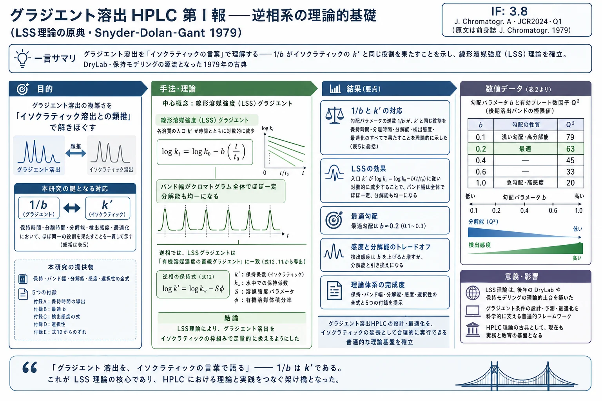

グラジエント溶出HPLC 第I報――逆相系の理論的基礎（LSS理論の原典・Snyder-Dolan-Gant 1979）

<!-- Snyder LR, Dolan JW, Gant JR. Gradient elution in high-performance liquid chromatography. I. Theoretical basis for reversed-phase systems. Journal of Chromatography, 165 (1979) 3–30. doi:10.1016/S0021-9673(00)85726-X の全訳密度日本語版。原文はスキャンPDFのため、本文はページ画像を精読して再構成した。 判読不能箇所は「原文参照」と明記。数値・数式は原文の表・式画像を直接確認して転記した。 -->
補足（本サイトでの位置づけ）: 本論文は生薬研究そのものではないが、当サイトが扱う生薬・漢方の HPLC/UPLC グラジエント分離・指紋分析の理論的原点である。ここで確立された「線形溶媒強度（LSS）理論」――勾配の急峻さを表す1つのパラメータ b ですべての分離特性（保持・バンド幅・分解能・感度・選択性）を予測する枠組み――は、後年の DryLab（グラジエント条件を計算機で最適化するソフト）や、当サイトで既に扱った den Uijl らの保持モデリング総説、Baeza-Baeza らの LSS 拡張（溶出度 g）の直接の源流である。生薬の多成分を1回のグラジエントで分離する際の「勾配をどれだけ急にすべきか」「分解能と分析時間・感度のトレードオフ」を根本から理解するための必読古典。数式が多く専門性は高いが、著者らの狙いは「グラジエントをイソクラティックの言葉で理解する」という徹底して実務的なもので、複雑な数値計算に頼らず一般的な指針を与える点に価値がある。インパクトファクター（IF）について: 原文の掲載誌 Journal of Chromatography（1979年）は現在の Journal of Chromatography A の前身。現行 J. Chromatogr. A の IF は 3.8（JCR2024・Q1、分析化学分野）。1979年当時のIF値は本稿では確認できないため、参考として現行誌のIFを併記する（要確認）。
書誌情報
- 原題: Gradient Elution in High-Performance Liquid Chromatography. I. Theoretical Basis for Reversed-Phase Systems
- 和題（本稿）: グラジエント溶出HPLC 第I報――逆相系の理論的基礎
- 著者: L. R. Snyder（Lloyd R. Snyder）, J. W. Dolan（John W. Dolan）, J. R. Gant（J. R. Gant）
- 所属: Technicon Instruments Corp., Tarrytown, N.Y. 10591, U.S.A.
- 掲載誌: Journal of Chromatography, 165 (1979) 3–30（Chromatographic Reviews セクション、CHREV. 117）
- DOI: 10.1016/S0021-9673(00)85726-X
- © 1979 Elsevier Scientific Publishing Company, Amsterdam
- 論文種別: 総説的理論論文（ほぼ全編が理論。実験検証は続報の第II報 [ref.1] で提示）
本稿の作成方針: 原文はスキャンPDFであり、機械的なテキスト抽出では数式・数値・表が判読困難だった。そこで全28ページのページ画像を精読し、本文・数式・表を再構成した。数値は表画像を直接確認して転記している。それでも判読不能だった箇所は「原文参照」と明記する。原文に無い数値・結論は加えていない。
目次（原文 CONTENTS）
- はじめに（Introduction）
- 実験（Experimental）
- グラジエント溶出（Gradient elution）
- A. 線形溶媒強度（LSS）分離
- B. LSSグラジエント溶出における保持時間・バンド幅・分解能
- (a) 保持時間 / (b) バンド幅 / (c) 分解能 / (d) 検出感度 / (e) 分離選択性
- 逆相液体クロマトグラフィーにおける溶媒強度と組成の関係
- A. 逆相LCの最適グラジエント（(a) 式12・13の例外）
- B. 逆相LCにおける他の溶媒Bの強度 S（(a) 逆相LCにおける φ' の最適値）
- その他の考察
- A. 初期グラジエント溶出分離に基づくイソクラティック分離の設計
- B. グラジエント溶出におけるカラム理論段数の計算
- 結論（Conclusions）
- 記号一覧（Symbols）
- 付録I：LSSグラジエント溶出における保持時間 t_g と溶出時容量因子 k_f の導出
- 付録II：カラム長 L 一定・分離時間固定/可変のときのグラジエント溶出における最適 b
- 付録III：イソクラティックおよびグラジエント溶出の感度式の導出
- 付録IV：φ' の変化に伴う分離選択性の変化（逆相LC）
- 付録V：式12からのずれと逆相グラジエント溶出の分離への影響
- 謝辞 / 14. まとめ / 引用文献
1. はじめに
現時点で、高速液体クロマトグラフィー（LC）による全分離の 60〜80% が、結合相（例：C₁₈）充填剤を用いた逆相モードで、一般に 5〜10 µm の全多孔性粒子を使って行われていると考えられる。この技法にグラジエント溶出が加わると（その傾向はますます強まっている）、得られる分離システムは、揮発性混合物に対して昇温ガスクロマトグラフィー（GC）が提供するのと同じ広い適用範囲を、不揮発性試料に対して提供することになる。
グラジエント溶出は強力な分離手法であるが、同時に理解するのが最も難しい手法の一つでもある。その結果、与えられた状況での最適な応用は、さまざまな分離特性を種々の操作パラメータ（実験変数）に関係づける簡潔な指針の集合があれば大いに促進されるはずである。それが本報および続報の狙いである。
過去数年で、グラジエント溶出分離の一般理論が発展してきた（例：文献2–5）。しかし、この研究の実用的な含意の多くは、あまり注目されずにきたようである。より最近では、逆相グラジエント溶出（RP-GE）の特殊ケースが理論的に検討されている（文献7, 9, 10）。ただしこれらの研究の多くは、試料の保持時間と分解能の詳細な数学的表現に焦点を当てている。これらのアプローチは、原理的には、既知組成の特定試料について、与えられたRP-GE系での分離を精密に計算できるが、未知試料の場合にはほとんど役に立たない。さらに、そうした計算には、対象試料のイソクラティック条件での溶出を詳細に調べ、イソクラティック保持が移動相組成にどう依存するかを特定する必要がある。
本論文での我々の意図は、試料組成が未知でもよく、試料の容量因子（k'）値が移動相組成とともにどう変化するかの情報が無くてもよい一般的なケースに対して、RP-GE の分離を理解・制御するための近似的な理論的取り扱いを提供することである。続く第II報 [ref.1] では、いくつかの理論的結論を実験例で示し、RP-GEを最適化するための詳細な規則を提示する。そこでの主な力点は、実験条件の関数としての分解能と検出感度である。
2. 実験
本論文はほぼ全編が理論的であり、言及される新しい実験データはすべて第II報 [ref.1] で詳述される。ここに提示する図の大半と一部の表は、厳密な計算に基づいており、多くの場合、付録Iの基礎方程式（式 i-1）の数値積分を含む。これらの計算、およびそれに付随する議論の多くには、いくつかの仮定が暗黙のうちに含まれている。すなわち：
- 試料は非常に小体積で注入されると仮定する（後から溶出するバンドのより大きな体積に比べて）。すなわち試料体積は最終的なバンド幅に影響しない。
- グラジエント生成器と試料注入器の間に時間遅れは無いと仮定する。すなわちグラジエントプログラムは試料注入の瞬間にカラム入口で始まる。これは実際のグラジエント溶出システムでは一般に成り立たない（混合器とカラム入口をつなぐ配管に有限体積が存在するため）。
- カラムに入る移動相グラジエントは、カラム上での移動相成分の吸着による影響を受けないと仮定する。逆相操作を含む実際の系では、これはおそらく妥当な近似である。
3. グラジエント溶出
可能な限り、ここでの我々のアプローチは、グラジエント溶出をイソクラティック溶出の言葉で説明し、イソクラティック分離に適用できる種々の概念をグラジエント溶出に移し替えることである。この手続きでは数学的精度がいくらか犠牲になると論じることもできるが、RP-GE分離を実行するための一般的指針を発展させるという我々の目標からすれば、これは避けられない。本論文の残りの議論をより容易に追うために、まずグラジエント溶出で何が起こるかを定性的に見て、グラジエント溶出理論で鍵となるいくつかの保持パラメータを定義しておくと有用である。
以下のイソクラティックおよびグラジエント溶出の例は、「実験」の節で述べたとおりに計算されている。仮定した特定の条件（例：グラジエントの形状と急峻さ）は、大部分において実用的かつ妥当なものである。
図1 は、8成分混合物のイソクラティック分離を示す（実験条件は図の説明にまとめてある）。バンド 1, 2, 3, …, 8 の k' 値は幾何級数的に増加する：0.5, 1.0, 2.0, …, 64。バンドはガウス形ではなく三角形で描かれ、各バンドの底辺は 4σ に等しい。
図1（原文 Fig. 1）: 逆相LCによる8成分試料の計算イソクラティック分離。移動相：20%メタノール-水；N = 1000；バンド1〜8の k' 値は 0.5, 1.0, 2.0, …, 64。（後半のバンドほど幅広く低くなり、バンド8（k'=64）は極めて幅広く検出困難。）
図2 は、図1と同じ試料をRP-GE分離するために提案されるグラジエント（溶媒プログラム）を示す。20%から80%メタノール-水への直線グラジエントが仮定され、細い実線がカラム入口での移動相組成の時間変化（試料注入後の時間 t を t/t0 単位で表す）を示す。図2の破線（"outlet" と表示）はカラムを出るときの移動相組成を示し、これは入口組成より1カラム体積分（時間にして t0）遅れる。さらに図2には、バンド 4, 6, 8 の入口 k' 値（k_i：時間 t/t0 における入口組成に対応するイソクラティック k'）の重ね描きがある。実際のバンドはカラムをある距離だけ移動しており、任意の時刻 t/t0 ではやや弱い溶媒中を動いているため、バンドの瞬間的（実際の）k' 値（k_c）は、その時刻の k_i よりわずかに大きくなる。
図3a は、図1の試料を図2の溶媒プログラムで分離した結果である。ここでも各試料バンドは等面積（等濃度・等検出感度に相当）と仮定する。図1と図3aを比較すると、最初に溶出するバンド（1〜3）は、イソクラティックでもグラジエントでもほぼ同じように溶出する（保持時間が似ており、バンド幅も同程度、ピーク高もほぼ同じ）。理由は、グラジエント溶出でこれらのバンドは最初の約3カラム体積以内で溶出し、カラムを出る移動相組成がまだあまり変化しておらず（図2参照）、これらのバンドの k' 値が出発イソクラティック値（図1）から大きく減少する前だからである。なお図1の移動相組成（20%メタノール-水）は、図3aのグラジエント溶出の開始時と同じである。
一方、最後に溶出するバンド（5〜8）の外観は、グラジエント（図3a）とイソクラティック（図1）で大きく異なる。理由は、これらのバンドの初期 k'（k_i）がかなり大きいため、バンドは本質的に一定の条件下で溶出するからである。
図4：カラム内でのバンド8の移動
図4a（バンド8のカラムに沿った移動、図2・3と同じ条件）と 図4b（同じだが急峻な勾配 b=0.8）は、バンドがカラム内をどう進むかを示す。図4aでは、バンド8の溶出時 k'（k_f）は 2.1 であり、これはイソクラティック溶出の最適範囲 2〜5（文献11参照）に入る。この値は十分小さく、比較的狭く検出容易なバンドを与える。対照的に、図1のイソクラティック分離ではバンド8の k'=64 であり、辛うじて検出できるバンド（図3aより約33倍幅広い）となる。
RP-GEでの後期溶出バンドについては、カラムに沿った移動はバンド8（図4a）とほぼ同様に進行する。唯一の違いは移動開始が早いか遅いか（t/t0 が3より小さいか大きいか）だけである。後期溶出バンドの x（移動分率）や k_c 対 t/t0 のプロットの形は、適切に設計された溶媒プログラム（図2のような）ではバンド8と本質的に同じになる。したがってすべての後期溶出バンドで、R（分解能）・k_f・バンド幅が同程度になる。これは、イソクラティック k' 値が似ているすべての後期溶出バンドで分解能が同程度になり、バンド幅がほぼ一定になることを意味する。
A. 線形溶媒強度（LSS）分離
グラジエント溶出分離で最も基本的かつ重要な実験変数は、溶媒プログラム――カラムから試料が溶出する間の移動相組成の変化（図2のような）――である。最適な溶媒プログラムは、試料 k' 値（イソクラティック分離）と移動相組成の関係に依存する。この関係については後の節で詳しく扱う。ここでは、分離の観点から根本的に最適なグラジエントプログラムに集中する。他所で論じられているように（文献2–5, 12）、そのような溶媒プログラムはいわゆる線形溶媒強度（LSS: linear solvent strength）の形をとる。
LSS溶媒プログラムでは、個々の試料化合物の入口 k_i 値がグラジエント溶出の間に次式に従って減少する：
$$\log k_i = \log k_0 - b\,(t/t_0) \tag{2}$$
ここで k_0 は、グラジエント溶出開始時のバンドの k' 値（すなわち、溶媒プログラム開始時の移動相組成――図2・3aでは20%メタノール-水――でのイソクラティック溶出の k'）を指す。パラメータ b は溶媒プログラム全体を通じて一定に保たれるべきであり、理想的には試料中のすべての化合物で同じ値をとる（原理的には厳密には不可能。後述）。
適切に設計されたLSSプログラムのグラジエント溶出分離における利点は次のとおり：
- クロマトグラム全体でバンド幅がほぼ一定になる；
- 早期・後期溶出バンドの双方で分解能または有効プレート数 NQ²（文献4参照）が同程度になる（クロマトグラム中の全バンドで NQ² 値が等しい）；
- ピークの先頭や末尾で密集することなく、クロマトグラム全体でバンドが規則的に配置される（隣接する全バンドの α−1 が十分大きい場合）；
- さまざまな実験変数を変えたときに分離がどう変わるかを容易に理解できる概念的な簡潔さ。
"カスタム"（非LSS）グラジエントが一部の試料により適切だと論じられることもある。そうしたプログラムでは、クロマトグラム内の個々の点で分離を調整し、分離困難なバンド対に最大の分解能を与えることが可能である。しかし、実際にこのアプローチを要する試料はごく少ない。
B. LSSグラジエント溶出における保持時間・バンド幅・分解能
先行論文（文献1, 5, 6）は、LSS系のこれらの分離パラメータの関係を、特に液-固（吸着）LCに重点を置いて導いている。ここではこれをすべての形態のLCに一般化し、続く節でRP-GEの特殊ケースに焦点を当てる。
(a) 保持時間
付録Iで導かれるとおり、LSS分離での所与バンドの保持体積 V_g（ml）は：
$$V_g = (V_m/b)\,\log(2.3\,k_0 b + 1) + V_m \tag{3}$$
ここで V_m はカラム内に含まれる移動相の総体積。式3は液-固LCの特殊ケースで実験的に検証されている（文献13）。逆相分離を含む他のLC形態でその妥当性を疑う理由はない。
保持時間 t_g（秒）は V_g/F で与えられる（F は移動相の流量 ml/秒）：
$$t_g = (t_0/b)\,\log(2.3\,k_0 b + 1) + t_0 \tag{3a}$$
ここで t_0 はカラムの「デッドタイム」（= V_m/F）。式3aから、保持時間 t_g は勾配の急峻さ b が増すと減少することがわかる。これはイソクラティック溶出で溶媒強度が増すと保持時間 t_R が減少するのと同様である。グラジエント溶出の b とイソクラティック溶出の溶媒強度とのこの類推は、式3aを次のように変形するとより定量的になる：
$$(t_g - t_0)/t_0 = (1/b)\,\log(2.3\,k_0 b + 1)$$
後期溶出バンド（大きな k_0）の場合は：
$$(t_g - t_0)/t_0 = (1/b)[\log 2.3 + \log k_0 + \log b] - (\log b)/b \tag{3b}$$
左辺の項はイソクラティック溶出の k' に相当し、所与のバンド（所与の k_0 値）に対してほぼ 1/b に比例する。分離時間 t_s は最後に溶出する化合物の t_g、またはグラジエントを完了するのに要する時間に等しい。いずれの場合も t_s ≈ t_g − t_0 であり、分離時間は 1/b に比例する。イソクラティック溶出では分離時間は最後に溶出する化合物の (1+k')、近似的に k' に比例する（例：文献11）。したがって、分離時間 t_s に関する限り、グラジエント溶出の 1/b はイソクラティック溶出の k' に対応する。
次に、より強い移動相でグラジエントを始める効果を考える。図3b・3cでは出発移動相がそれぞれ30%・40%メタノール-水（図3aの20%と比較）である。初期バンドはほぼイソクラティックに溶出するので、バンド1〜3は図3a→3cで進むほど強い溶媒で溶出し、保持時間が短く、バンドが狭く高く、分解能が悪くなる。一方、後期バンドの溶出は出発溶媒組成にあまり敏感ではない。後期バンド（図3の6〜8）の保持時間は溶媒プログラムを遅い時点で始めることで短縮されるが、これらは依然としてほぼ同じ移動相組成で溶出する。原文の表（各バンドの溶出時の入口移動相組成、%メタノール）：
| 出発移動相組成（%メタノール） | バンド6 | バンド7 | バンド8 |
|---|---|---|---|
| 20 | 55 | 67 | 76 |
| 30 | 59 | 68 | 77 |
| 40 | 62 | 69 | 77 |
これらの後期バンドの幅・検出可能性・分解能も、図3a〜cで本質的に一定である。
(b) バンド幅
グラジエント溶出分離のバンド幅は、多かれ少なかれ独立な3つの過程の結果である：
- バンドがカラムを移動する際の通常の広がり（文献14）；
- バンド圧縮現象――グラジエント溶出でバンド末尾がより速く移動する（イソクラティックでは全体が等速で移動）ことから生じる（文献5）；
- カラムを出るときのバンドの瞬間的 k' 値（k_f）（文献14）。
カラム床上でのバンド幅 σ_x（各バンドがカラムを出る時点での、長さ単位（cm）のガウス分布の標準偏差）を考えると、カラムの理論段数 N は：
$$N = (L/\sigma_x)^2 \tag{4}$$
ここで L はカラム長。イソクラティック溶出の N は一般に k' に依存しないと仮定されるので（文献4, 5）、σ_x は異なるバンド・粘度の似た異なる移動相で一定となる。これはグラジエント溶出でも σ_x が一定になることを意味し、実際そのとおりである。σ_x の値は式4で与えられる。
グラジエント溶出のバンド圧縮は先行研究（文献5）で論じられている。イソクラティック溶出で得られるバンド幅 σ_x は、グラジエント溶出では因子 G だけ縮小される。G は数値積分で計算でき、LSSグラジエントでは G はもっぱら勾配パラメータ b の関数である（図5）。中間的な b 値（0.2 < b < 0.5）では G はほぼ一定で 0.8 に等しく、通常の場合バンドが約 20% 圧縮されることを意味する。より高い b でのさらなる圧縮（微量分析での検出感度向上）は後の節で扱う。
図5（原文 Fig. 5）: グラジエント急峻さ b の関数としてのバンド圧縮因子 G。式 i-1 の数値積分で計算。G は b→0 で 1 に近づき、b が増すと単調減少するが減少は緩やか（b=3.0 でも G≈0.6）。
時間単位でのグラジエント溶出バンドの最終幅 σ_t は、σ_x（溶出直前のカラム床上のバンド幅）と溶出時の瞬間 k' 値（k_f）で決まる（文献14）。この最終値は次式で与えられる（文献5, 14）：
$$\sigma_t = (1 + k_f)\,\sigma_x\,G\,(t_0/L) \tag{5}$$
同様に、付録IのLSS分離の結果より：
$$k_f = \frac{1}{2.3b + 1/k_0} \tag{6}$$
ほとんどのバンドで k_0 が大きいので、式6は次のように近似できる：
$$k_f = 1/2.3b \tag{6a}$$
最後に、式4と式5を組み合わせて時間単位で再表現すると：
$$N = \left[\frac{G(1 + k_f)\,t_0}{\sigma_t}\right]^2 \tag{7}$$
式6aと式7を組み合わせると：
$$\sigma_t = \frac{(2.3b + 1)\,\sigma_{t0}}{2.3b\,N^{1/2}} \tag{7a}$$
（ここで σ_t0 は非保持バンド（k'=0）の時間単位でのバンド幅。）式7aの実験的検証は、液-固グラジエント溶出LC（文献4）の一研究（表1）で与えられる。計算値と実験 σ_t 値の一致は、式6aに入る種々の近似と、文献4で推定できる b 値の不確かさを考えれば妥当である。
表1（原文 TABLE 1）：LSSプログラムを用いた液-固グラジエント溶出LCにおける平均バンド幅の実験値と計算値の比較
| b* | N | G | σ_t/t0（実験）** | σ_t/t0（計算）*** |
|---|---|---|---|---|
| 0.15 | 1090 | 0.93 | 0.10 | 0.11 |
| 0.27 | 920 | 0.90 | 0.09 | 0.08 |
| 0.52 | 1600 | 0.86 | 0.06 | 0.04 |
\ 研究された化合物の平均 A_s=10 に基づく b の再計算（文献3参照）は、文献4の報告値より30%低い値を与えた。\\ 文献4のデータ。\\\ 式7a。
式7aによれば、LSSグラジエントプログラムでは溶出バンドの幅はクロマトグラム全体で一定と予測される。より厳密な式6（式6aではなく）を使うと、早期溶出（小さい k_0）バンドは後期バンドよりわずかに狭いと予測される。このパターンは図3の各計算クロマトグラムに現れている。図3より広いグラジエント（例：0〜100%メタノール-水）では、クロマトグラム中のほとんどのバンドが等幅に見えるだろう。
イソクラティック溶出ではバンド幅は近似的に k'（より正確には 1+k'）に比例、すなわち溶媒強度に反比例して増加する。グラジエント溶出（式7a）ではバンド幅は b に反比例して変化する。ここでも、グラジエント溶出の勾配急峻さ b と、イソクラティック溶出の溶媒強度あるいは 1/k' との類推が見られる。
(c) 分解能
LSSグラジエント溶出の分解能は既にある程度詳しく論じられている（文献4, 5）ので、ここでは実用的なまとめと、カラム技術の最近の進展に関する更新のみを繰り返す。b（グラジエント溶出）と 1/k'（イソクラティック溶出）の間で既に描いた類推が、分解能の種々の側面にも適用される。グラジエント溶出の分解能 R_s は、イソクラティック溶出とほぼ同じように定義できる（例：文献11）：
$$R_s = \frac{t_2 - t_1}{2(\sigma_1 + \sigma_2)} \tag{8}$$
ここで t_1, t_2 は隣接バンド1, 2のグラジエント溶出における保持時間 t_g、σ_1, σ_2 は対応するバンド幅（σ_t 値）である。
グラジエント溶出の分解能は、イソクラティック溶出の対応表現（例：文献11）に類似した式でも記述できる：
$$R_s = \tfrac{1}{4}(\alpha - 1)\,N^{1/2}\left[\frac{k'}{1 + k'}\right] = \tfrac{1}{4}(\alpha - 1)(NQ^2)^{1/2} \tag{9}$$
式9の量 NQ² はカラムの有効プレート数と呼ばれる。グラジエント溶出にも同様の定義が適用でき、式1（=式9の一般形）で NQ² = N[k̄/(1+k̄)]²。NQ² の値が大きいほど（他の因子、例えば α が等しければ）一般に分解能が良い。LSSグラジエント溶出の Q（および NQ²）の値は、後期溶出バンドで一定の極限値に近づき、この極限値は溶媒プログラムの b で決まる。b の関数としての Q² を、基礎グラジエント溶出方程式（付録Iの式 i-1）の数値積分（文献4）で計算したものが 表2 である。
表2（原文 TABLE 2）：b の関数としてのLSSグラジエント溶出における有効プレートと検出感度
| b | k̄ = 1/1.3b | Q²* | [k̄/(1+k̄)]²** | s_g*** | s_k^§ |
|---|---|---|---|---|---|
| 0.1 | 7.7 | 0.79 | 0.78 | 0.2 | 0.1 |
| 0.2 | 3.8 | 0.63 | 0.63 | 0.4 | 0.2 |
| 0.4 | 1.9 | 0.45 | 0.43 | 0.6 | 0.3 |
| 0.6 | 1.3 | 0.33 | 0.32 | 0.8 | 0.4 |
| 1.0 | 0.8 | 0.20 | 0.19 | 1.0 | 0.6 |
| 1.5 | 0.5 | 0.12 | 0.12 | 1.2 | 0.7 |
| 2.5 | 0.3 | 0.06 | 0.06 | 1.4 | 0.8 |
\ 文献4より式 i-1 の数値積分で計算。\\ b の値と式10から計算。\\\ 式11aと6a。§ 式 iii-6。
表2の Q² を [k̄/(1+k̄)]²（式9と表2の第4列）と比較すると、次を仮定すればこの2つの関数がほぼ一致することがわかる：
$$\bar{k} = 1/1.3b \tag{10}$$
すなわち、式10の k̄ を種々の b 値に代入すると、表2の [k̄/(1+k̄)]² が、同じ b 値のグラジエント溶出 Q² 値とほぼ同一になる。したがって分解能に関する限り、1/1.3b = k̄ をグラジエント溶出における k' の平均的（有効）値とみなせる。
イソクラティック溶出に最適 k' が存在するように、LSSグラジエント溶出には最適 k̄ と b が存在する。イソクラティック溶出では、それぞれ最適 k' 値が異なる3つの実験ケースを定義できる（文献11）：
- 移動相流速 u 一定（カラム長 L と圧力降下 P を変える）：k'（最適）= 2；
- L 一定（u と P を変える）：k'（最適）= 3〜6；
- P 一定（L と u を変える）：k'（最適）= 2.5〜3。
ケース(2)・(3)では、最適 k' は主にカラム充填剤の粒径 d_p と、結果として決まるカラムパラメータ n（0.3 < n < 0.6、文献11参照）とともに変化する。ケース(1)はグラジエント溶出では関心が限られる。ケース(2)が最も一般的で、付録IIで詳しく論じる。まとめると、このケースにはグラジエント溶出における最適 b が存在し、実験条件に応じて 0.1〜0.3 の範囲でさまざまである。グラジエント溶出の平均的・最適な b 値として 0.2 を一般に仮定できる。この b の範囲（0.1〜0.3）は、式10とイソクラティック（最適）k' 値 3 < k' < 6 から計算できる範囲と同じである。ここでもグラジエント溶出の b とイソクラティック分離の k' の間にかなり精密な類推が見られる。類推を延長すると（理論的には追究していないが）、ケース(3)の最適 b は 0.25〜0.30 のはずである。
グラジエント溶出の有効プレート（NQ²）と分解能は、表2および図3a（b=0.2）対図6（b=0.8）に示すように、b を減らすことで常に増やせる。しかしこれは分離時間の増加をもたらすので、b を一定に保ったまま単に流量を遅くする（Q ではなく N を増やす）代替案と天秤にかける必要がある。上記の最適 b 値の意義は、分離時間 t_s を増やすには、b を約0.2に保ったまま流量を減らして N を増やすほうが好ましいことにある。このアプローチが一般に最大分解能を与える。
図6（原文 Fig. 6）: 図1の試料・カラムでの計算グラジエント溶出分離。図3aと同じ条件だが b=0.8。クロマトグラムは2倍に減衰表示。（急勾配のため各バンドは狭く高いが分解能は低下。）
(d) 検出感度
グラジエント溶出のバンドはイソクラティック溶出より一般に狭いので、グラジエント溶出は微量分析などで検出感度を高める手段を提供する。イソクラティック溶出では k' を下げるとバンド幅が減り検出感度が増す（文献16）。イソクラティック溶出の感度関数 s_k を、k'≠0 のあるバンドの高さの、t_0 で溶出するバンドの高さに対する比として定義する。付録IIIで論じるとおり：
$$s_k = 1/(1 + k') \tag{11}$$
同様に、グラジエント溶出のバンドの高さの、同じカラムから t_0 でイソクラティックに溶出するバンドの高さに対する比として、感度関数 s_g を定義できる。付録IIIで導くとおり、グラジエント溶出の s_g は：
$$s_g = \frac{1}{G(1 + k_f)} \tag{11a}$$
式11aと式11を比較すると、k_f = 1/2.3b（式6a）を通じて、イソクラティック溶出の k' 値とグラジエント溶出の b 値の類推が再び見える。表2で s_g（b の関数）と s_k（b = 1/2.3k_f の関数）を比較すると、所与の b 値で s_g が一般に s_k より大きい。これは、分解能または NQ² が両分離で同じ（k' = 1/1.3b）とき、グラジエント溶出の検出感度が常に対応するイソクラティックの場合より良いことを意味する。
バンド圧縮効果を考えると、十分急峻なグラジエント（大きな b）でグラジエント溶出バンドを望むだけ狭く「絞れる」と思うかもしれないが、実際はそうではない（表2）。G は b とともに緩やかにしか減少しないので、t_0 で溶出するバンドに対して有意にバンド幅を減らすには非現実的に大きな b 値が必要になる。表2で b=2.5 でも t_0 溶出バンドに対しバンド高の増加はわずか40%（s_g=1.4）であり、その間グラジエント全体は時間 0.7t_0 に圧縮される。これほど急峻なグラジエントは現有機器では非実用的であり、b>1（Q²<0.2）では分解能が大きく損なわれる点にも注意。とはいえ表2からは、b=1.0 が b=0.2（最適分解能）に対し検出感度を約3倍増やすことがわかる。ただし b を1.0に上げるとカラム効率 NQ² が3分の1に低下する。
グラジエント溶出による検出感度のはるかに大きな増加は、他の方法で達成できる（文献16）。例えば、対象化合物の k_0 値がかなり大きければ、非常に大きな試料体積を注入できる。この場合、対象バンドは最初カラム入口に保持され、大きな試料体積は最終的に溶出する際のこれらの化合物のバンドをあまり広げない。
(e) 分離選択性
分離選択性とは、グラジエント溶出における2化合物の保持時間の差を意味し、これは式1の α の平均値が1と異なることを含意する。式3aを参照すると、保持時間の差は2化合物の k_0 または b の差から生じうる。次節で論じるように、所与のグラジエント溶出系では異なる化合物の b 値は通常同程度なので、選択性を得るには主に k_0 の差に頼る。2化合物の k_0 の差は、RP-GE系の有機溶媒の種類を変えることでのみ達成でき、これが α−1 を増やす必要がある場合の最も一般的なアプローチである。いくつかの研究（例：文献17–19、特に20）が、この方法で α の有意な変化を達成できることを示している。一例として、種々の配糖体のイソクラティックRP分離（文献18）での α の変化：
| バンド対 | α（37%アセトニトリル-水） | α（50%ジオキサン-水） |
|---|---|---|
| ギタロキシゲニン / ギトキシン | 1.07 | 2.7 |
| ラナトシドB / ラナトシドE | 1.00 | 1.01 |
| ギタロシン / ラナトシドA | 1.02 | 1.25 |
あるいは、2化合物の b 値が所与のRP-GE系で異なる場合、勾配急峻さ b（有機溶媒体積分率の変化率）を変えることで α を変えることも可能である。これは付録IVで詳しく論じる。
4. 逆相液体クロマトグラフィーにおける溶媒強度と組成の関係
イソクラティック逆相LCにおける試料 k' 値の移動相組成の関数としての変化について、多くの研究が報告されている（例：文献10, 17–34）。通常は水-メタノールまたは水-アセトニトリル混合物からなる移動相と幅広い試料化合物について、所与の系（特定のカラムと二成分溶媒の有機成分、例えばメタノール）では、試料 k' 値が移動相中の有機溶媒Bの体積分率 φ_b と次式で関係づけられることが観測される：
$$\log k' = \log k_w - S\,\phi_b \tag{12}$$
ここで k_w は純水を移動相とするイソクラティック k' 値（通常は外挿値）。多くの研究（例：文献21–25, 27–32）が、式12が k' と φ_b の広い範囲で実験誤差内で妥当であることを示している。式12の係数 S は純溶媒Bの移動相としての強度に関係し、S が大きいほど φ_b の増加に伴う k' の減少が速い。所与の逆相系（例：異なる比のメタノール-水移動相と所与のカラム）では、S はしばしばほぼ一定で、溶質の分子サイズや構造が変わっても一定に近い。Bがメタノールまたはアセトニトリルのときの S は通常約3だが、研究によって2〜4の範囲で変動する（理由は未解明）。後述のとおり、S はエタノールやテトラヒドロフランのような極性の低い溶媒Bでは変化し、Bの極性が下がるほど S は増加する。
A. 逆相LCの最適グラジエント
次に、逆相系のLSSグラジエントが直線溶媒組成グラジエント――有機溶媒Bの体積分率 φ_b が時間とともに直線的に増加する――に対応することを示す：
$$\phi_b = \phi_0 + \phi'\,t \tag{13}$$
ここで φ_0 は分離開始時の φ_b の値、φ' = dφ_b/dt は φ_b の時間変化率（所与の分離で一定）。式12と式13を組み合わせると：
$$\log k' = (\log k_w - S\phi_0) - S\phi'\,t \tag{13a}$$
これは式2（LSSグラジエント）と同じ形である（log k_w − Sφ_0 を log k_0 とし、因子 Sφ' を b/t_0 と等置すれば）。LSSグラジエントが一般に最適だと論じたので、式13の直線グラジエントも同様に逆相グラジエント溶出LCに最適である。
(a) 式12・13の例外
Schoenmakers ら（文献10）は、彼らが調べた逆相系では式12が厳密には従われず、log k' 対 φ_b のプロットがわずかに凹（下に凸）になると指摘した。他の研究（文献33, 34）も k' と φ_b の類似の関係を示し、極端な場合これらのプロットは φ_b ≈ 0.9 の領域で極小を通る。これらの効果と我々の解析への影響のより慎重な分析は、付録Vおよび第II報 [ref.1] で提示する。要約すると、式12からのこれらのずれは本論文でこれまで提示した結論に本質的に影響しない。
文献31のデータは、同族列の溶質で S が分子サイズとともに規則的に増加することを明確に示している。ポリマーのオリゴマー列（例：文献35）でも同様の S の増加が示唆される。同族列やオリゴマー試料では、直線グラジエント（式13）を使うと後期バンドの分解能が悪化し、これらのバンドが漸進的に狭くなると予想される。これはLSSグラジエントを維持することで補正できる。b と Sφ' はLSSグラジエント全体で一定でなければならないので、S が増加する（ポリマー試料）場合、φ' は時間とともに減少しなければならない（凸グラジエント）。Poile（文献9）は、多環芳香族炭化水素（S と k_w が分子サイズとともに規則的に増加）の溶出でもこれが成り立つと論じている。
B. 逆相LCにおける他の溶媒Bの強度 S
多くの研究が、水-有機混合物を移動相とする有機溶媒Bとしてのメタノールの S 値を導けるようにしている。S は所与の研究（とカラム）ではかなり一定だが、研究ごとに ±1 単位（2 < S < 4）で変動する。したがって S は所与の溶媒Bに固有の定数ではなく、他の分離パラメータとともにいくらか変化するようである。いくつかの研究が、複数の溶媒Bについて逆相系の k' 値を比較し、S を溶媒Bの関数として推定できるようにしている。データを 表3 にまとめた。得られた S 値は異なる溶媒でおおむね一致し、表3下部で平均されている。S の未解明の変動性のため、所与の溶媒Bのこれらの「最良」S 値はせいぜい近似とみなすべきである。S を、試料分子構造・溶媒B・カラム充填剤の変動（被覆率、アルキル鎖長など）・分離温度など、影響しうる全変数の関数として決定的に調べる実験研究が明確に必要である。
表3（原文 TABLE 3）：逆相LC（25℃）における異なる有機溶媒Bの溶媒強度（S）値のまとめ
| 文献 | メタノール | アセトニトリル | エタノール | アセトン | ジオキサン | イソプロパノール | テトラヒドロフラン |
|---|---|---|---|---|---|---|---|
| 18–29, 23 | 1（仮定値） | 3.5 | 2.9 | 4.2 | |||
| 10 | 2.7 | 3.4 | 4.1 | ||||
| 17 | (3)* | 4.1 | 4.7 | ||||
| 36 | (7.5)* | 3.4 | 3.5 | 4.2 | 4.4 | ||
| 「最良」 | 3.0 | 3.1 | 3.6 | 3.4 | 3.5 | 4.2 | 4.4 |
\* 他の溶媒の S 計算のための仮定値（k' 対 φ_b データは提供されていない）。
（注：表3の一部セルは原文スキャンで判読困難。最下段の「最良」値が実務上の要点であり、これは明瞭に読み取れる。個別文献行の空欄・数値の一部は原文参照。）
(a) 逆相LC系における φ' の最適値
先の節で、逆相LCの b の最適値は一般に約0.2（原文本文では0.3とも記載。要確認）とすべきと論じた。式13aの観点から：
$$\phi' = \frac{b}{S\,t_0} \tag{14}$$
b=0.2 と表3の S（種々の溶媒B）を式14に代入すると、単位分離時間あたりの最大分解能（NQ²）のための最適勾配急峻さ（φ' 値）を計算できる。例えばメタノール-水（S=3）、t_0=1分では、最適 φ' = 0.067、すなわち毎分6.7%のメタノール濃度増加となる。種々の t_0 と溶媒Bの最適 φ' を 表4 にまとめる。
表4（原文 TABLE 4）：逆相LCにおける最適勾配急峻さ（最大分解能のため、b=0.2）／φ'（%B変化/分）
| 溶媒B | t_0=10秒 | t_0=30秒 | t_0=1分 | t_0=2分 |
|---|---|---|---|---|
| メタノール | 40 | 13 | 6.7 | 3.3 |
| アセトニトリル | 39 | 13 | 6.5 | 3.2 |
| アセトン | 35 | 12 | 5.9 | 2.9 |
| ジオキサン | 34 | 11 | 5.7 | 2.8 |
| エタノール | 33 | 11 | 5.6 | 2.8 |
| イソプロパノール | 29 | 10 | 4.8 | 2.4 |
| テトラヒドロフラン | 27 | 9 | 4.5 | 2.3 |
（注：t_0=2分列のアセトン・ジオキサン・エタノール値はスキャン判読が難しく、S 値と比例関係から補ったもの。厳密値は原文参照。）
5. その他の考察
A. 初期グラジエント溶出分離に基づくイソクラティック分離の設計
グラジエント溶出は、未知試料の「スカウティング（下見）」技法として使われることがある。逆相グラジエント溶出による初期分離は試料の即座の全体像を与え、しばしば最初の試みで十分な分離が得られる。しかしその後、いくつかの理由で分離をイソクラティックで繰り返したい場合がある。このとき、初期グラジエント溶出分離の結果から、イソクラティック分離の正しい溶媒強度を推定できると有用である。
イソクラティック溶出には対象バンドの適切な k' 値が必要である。この点で式6aが有用で、これはバンドがカラムを出るときの k' 値（k_f）を（同時刻にカラムを出る移動相中で）定義する。最適 b 値 0.2 では、イソクラティック分離の k' = k_f = 1/(2.3×0.2) = 2.2 である。固定長カラムのイソクラティック分離の最適 k' は約4なので、グラジエント溶出で実際に対象バンドを溶出させる溶媒より、イソクラティックでは幾分弱い溶媒が必要になる。実際、イソクラティック溶出の k' を（グラジエント溶出に対し）約2倍に増やす必要がある。式2から、b=0.2 では、これは対象バンド溶出の 1.5t_0 前にカラムを出る移動相に対応する。カラムに入る移動相組成で考えるほうが便利なので、イソクラティック分離には、時刻 t_g − 2.5t_0（t_g は対象バンドのグラジエント溶出保持時間）にグラジエントカラムに入る溶媒に対応する溶媒が必要となる。
B. グラジエント溶出におけるカラム理論段数の計算
大半の研究者に明らかなように、カラム理論段数 N は、イソクラティック溶出の通常の関係式ではグラジエント分離から決定できない：
$$N = (t_g/\sigma_t)^2 \tag{15}$$
式15をグラジエントクロマトグラムに適用すると、多くの場合、各バンドの溶出時の k_f 値が低いために N を大きく過大評価する。それでも式15は文献（例：文献37–40）でこの目的に周期的に使われている。多くの場合その N 値の欠点は認識されているが、これら「見かけの」N 値に基づく結論が導かれている。グラジエント溶出でのそうした N 値（式15）の使用は推奨されない。相対的な N 値でも t_g とともに大きな因子で変動しうるからである。代替は、式7aから導けるグラジエント溶出の正しい N の表現を使うことである：
$$N = \left[\frac{(2.3b + 1)\,G\,\sigma_{t0}}{2.3b\,\sigma_t}\right]^2 \tag{15a}$$
式15aはグラジエント溶出分離からの理論段数の計算を可能にする。勾配急峻さパラメータ b は既知でなければならないが、式14から計算できる。圧縮因子 G は図5（G を b の関数としてプロット）から推定できる。最後に、実験量 σ_t0 と σ_t はクロマトグラムから決定される。
6. 結論
勾配急峻さパラメータ b の逆数 1/b は、より浅いグラジエント（より小さい φ'）で増加する。量 1/b は、グラジエント溶出において、イソクラティック分離のパラメータ k' とほぼ同一の役割を果たす。したがってグラジエント溶出の分離は、イソクラティック溶出とほぼ同じように理解・制御できる。第II報 [ref.1] はこの点に関する多くの具体的規則をまとめ、本論文の各節で提示した種々の結論の実験的例示と検証を提供する。イソクラティックの k' をグラジエントの 1/b で置き換えたときに存在する種々の類似性を 表5 にまとめる。
逆相グラジエント溶出では、パラメータ b は実験変数 φ'（移動相中のB濃度の%/分変化）、純溶媒Bの溶媒強度 S、カラムデッドタイム t_0（分）で次のように定義される：
$$b = \frac{\phi'\,S\,t_0}{100} \tag{16}$$
（式16は φ' を %/分単位で表したもの。φ' を分率/分単位（式14）で表せば b = φ' S t_0 と同値。）
表5（原文 TABLE 5）：k'（イソクラティック）を 1/b（グラジエント）で置き換えたときのイソクラティック溶出とグラジエント溶出の類推
| 変数 | イソクラティック溶出での依存 | グラジエント溶出での依存 | 式 |
|---|---|---|---|
| 計算容量因子 | (t_R − t_0)/t_0 = k' | (t_g − t_0)/t_0 ≈ (log k_0)/b | 式3b |
| 分離時間 t_s | 1 + k' | (log k_0)/b | 式3b |
| 分解能 R_s | k'/(1+k') | k̄/(1+k̄)（k̄ = 1/1.3b） | 式10 |
| 検出感度 | 1/(1+k') | 1/[G(1+k_f)]（k_f = 1/2.3b） | 式6a |
| 最大分解能 | 最適 k' はカラムで変わるが通常 3<k'<6 | 最適 b はカラムで変わるが通常 3<k̄<6（k̄=1/1.3b） | 付録II |
種々の有機溶媒の S 値は表3にまとめてある。分解能は b の減少とともに増加するが、分離時間も増える。所与の分離時間には最適 b が存在し、一般に0.2に近いが ±0.1 の変動は分解能にほとんど影響しない。b を一定に保ったまま分解能を増やすには、流量を減らすか L を増やす（第II報で詳論）。表4は種々の t_0 と有機溶媒Bの最適勾配率 φ' をまとめる。φ' はグラジエント溶出中一定に保つべきで、これは逆相グラジエント溶出の溶媒グラジエントが直線であるべきことを意味する。
検出感度は b を増やすと増加する。b を5倍（通常の最適値0.2から1.0へ）にすると検出感度は3倍になるが、分解能は3分の1に低下する（表2）。
7. 記号一覧（抜粋）
- A, B: グラジエントプログラムで使う溶媒A（水）とB（有機）。
- b: 式2の係数；大きい b ほど急峻なグラジエント（式14）。
- F: カラムを通る移動相の流量（ml/秒）。
- G: バンド圧縮因子；圧縮によるバンド幅の分率的減少に対応（図5：G は b の関数）。
- k': 容量因子（文献11）。
- k_c: グラジエント溶出中の時刻 t におけるバンドの実際の k' 値；バンドが位置するカラム上の点の移動相組成で決まる。
- k_f: グラジエント溶出でバンドがカラムを出る瞬間の k' 値；t=t_g のときの k_c に等しい。
- k_i: グラジエント溶出開始後の任意時刻 t にカラム入口に注入した化合物の k' 値；時刻 t にカラムに入る移動相と同組成でのイソクラティック k' に等しい。
- k_0: グラジエント溶出開始時（t=0）の化合物の k' 値（k_0 = k_i または k_c at t=0）；グラジエント開始時の移動相と同組成のイソクラティック k' に等しい。
- k_w: 純水を移動相とする化合物の k' 値；式12に基づく外挿値。
- k̄: グラジエント溶出中の k_c の（おおよその）平均値（図3）；R_s を b の関数として決める。
- L: カラム長（cm）。LSS: 線形溶媒強度。
- n: カラムパラメータ（付録IIの式 ii-3で定義）。
- N: カラム理論段数（イソクラティックは式15、グラジエントは式15aで定義）。
- P: カラム両端の圧力降下（p.s.i.）。
- Q: カラム効率因子；イソクラティックは k'/(1+k')、グラジエントは k̄/(1+k̄)。
- RP-GE: 逆相グラジエント溶出。
- R_s: 分解能因子（グラジエントは式1, 8, 9）。
- S: 溶媒強度パラメータ（式12）。
- s_g, s_k: 感度パラメータ；グラジエント（g）またはイソクラティック（k）溶出のピーク高の、イソクラティック t_0 バンド高に対する比（式 iii-6, iii-7）。
- t: 試料注入・グラジエント開始後の時間（秒）。
- t_g: グラジエント溶出の保持時間（秒）。t_0: カラムデッドタイム（秒）。
- t_R: イソクラティック溶出の保持時間（秒）。t_s: 分離完了までの時間（秒）。
- u: カラム内移動相の速度（cm/秒）。
- V: 試料注入・グラジエント開始後にカラムから溶出した移動相体積（ml）。
- V_g: グラジエント溶出のバンド保持体積（ml）。V_m: カラム内の移動相総体積（ml）。
- x: 時刻 t にバンドがカラムに沿って移動した分率的距離（図4）。
- α: 隣接2バンドの分離因子。
- σ_t0: イソクラティック溶出で k'=0 のときの σ_t 値（秒）。
- σ_t: イソクラティックまたはグラジエント溶出の溶出バンド幅；ガウスバンドの標準偏差（秒）。
- σ_x: 溶出直前のカラム上のバンド幅（cm）。
- φ_b: 水-有機混合物中の有機溶媒Bの体積分率。φ': φ_b の時間変化率 dφ_b/dt（秒⁻¹、%/分でも表せる）。
- φ_0: t=0 での φ の初期値。φ_f: グラジエント終了時の φ の最終値。
8. 付録I：保持時間 t_g と溶出時容量因子 k_f の導出
グラジエント溶出の基礎方程式（例：文献2）より、保持体積 V に対し：
$$\int_0^{V_g} \frac{dV}{V_c} = 1 \tag{i-1}$$
ここで dV はバンド中心を通る移動相の微分体積の通過、V_c は瞬間的・補正保持体積（k_c に対応）：
$$V_c = k_c\,V_m \tag{i-2}$$
V_m はカラムのデッド体積。式2は次のように書き換えられる：
$$\log k_i = \log k_0 - b\,(V/V_m) \tag{i-3}$$
k_i と k_c は式 i-1 の観点で等価になる。式 i-3 の k_i を式 i-2 の k_c に代入し、式 i-2 の V_c を式 i-1 に代入すると：
$$\frac{1}{k_0 V_m}\int_0^{V_g} 10^{\,b V/V_m}\,dV = 1 \tag{i-4}$$
式 i-4 の積分が式3を与える。溶出時のバンドの k' 値（k_f）は、補正保持体積 (V_g − V_m) を式 i-2 に代入して得られる：
$$\log k_f = \log k_0 - \log(2.3\,k_0 b + 1) \tag{i-5}$$
式 i-5 を整理すると式6になる。
9. 付録II：カラム長 L 一定・分離時間固定/可変のときの最適 b
固定長 L のカラムで、種々の分離時間 t_s（および対応する流量 F・速度 u の変動）に対し、勾配パラメータ b を最適化して有効プレート数 NQ² を最大化したい。所与の t_s に対し、最後に溶出するバンドの k_i 値（k_z）は式2から log k_z = log k_0 − b(t_s/t_0)、これを整理して b = (log k_0/k_z)(t_0/t_s)。u = L/t_0 なので：
$$b = [(\log k_0/k_z)\,L/t_s]\,\frac{1}{u} \tag{ii-1}$$
右辺の括弧内は所与の分離で一定なので、b は u に反比例する：
$$b = C/u \tag{ii-2}$$
多くの場合、プレート高 H を H = D u^n で近似できる（式 ii-3）。式 ii-2 と ii-3 を組み合わせ、有効プレート数を NQ² = (L/H)[k̄/(1+k̄)]²（式 ii-4）と表し、H（式 ii-4 由来）と k̄（式10）を代入すると：
$$NQ^2 = (L/D C^n)\,b^n\,[1/(1.3b + 1)]^2 \tag{ii-5}$$
式 ii-5 の NQ² を最大化する最適 b は、微分により：
$$b(\text{最適}) = n/(2.6 - 1.3n) \tag{ii-6}$$
ペリキュラー充填剤のカラムパラメータ n は0.4で、最適 b = 0.24 を与える。多孔性充填剤の大粒子分離では n は通常0.4〜0.6で、b = 0.24〜0.38 に対応する。小粒子（例：d_p < 10 µm）分離では n は通常より小さいが、式 ii-3 の信頼性も下がるので、別のアプローチが必要となる。
小粒子の場合、H = h·d_p を換算プレート高 h と換算速度 v = u·d_p/D_m の関数として記述する（D_m は移動相中の試料拡散係数）。多孔性粒子の良く充填されたカラムでは h は v の関数として（文献17）：
$$h = 2/v + v^{0.33} + 0.05\,v \tag{ii-7}$$
最後に NQ² を、H の代わりにこの表現を式 ii-3 に代入して計算：
$$NQ^2 = (L/h\,d_p)\,[\bar{k}/(1+\bar{k})]^2 \tag{ii-8}$$
例： 第II報で論じる 25 cm カラム・5 µm 粒子・5–95%メタノール-水グラジエント・分離時間20分のケース。b=0.1 の計算を仮定。φ_0=0.05 を初期値、φ_f=0.95 を最終値とする。式2と式12から b = S(φ_f − φ_0)/(t_s/t_0)。実験条件を入れると 0.1 = 3.0(0.95−0.05)/(20−60/t_0)（式 ii-9）から t_0 = 44秒。速度 u = L/t_0 = 25/44 = 0.57 cm/秒。換算速度 v = u·d_p/D_m（式 ii-10）、溶質拡散係数を 3×10⁻⁵ と仮定すると v = 0.57×0.0005/0.00003 ≈ 9.5。式 ii-7 から h = 2.75。式10から k̄ = 1/(1.3×0.1) = 7.7。これらを式 ii-8 に入れて NQ² = (25/2.75×0.0005)(7.7/8.7)² ≈ 10,900。
特定の条件では NQ² 対 v の特徴的なプロットが得られる（図7：10 µm 粒子・逆相・室温・25 cm カラム・分子量300試料・0–100%メタノール-水グラジエント）。この場合、分離時間が増えると最適 b は約0.2からより低い値へ移る（例：t_s=75分で0.08）。図7の曲線は L を変えても変わらず、L の増加に対し NQ² と t_s が比例的に増える。より小さい粒子（例：5 µm）では同じ基本曲線が適用されるが、NQ² 値が比例的に大きく、t_s が比例的に小さくなる（図7では例えば 3.7, 11.2, 37.5分）。
10. 付録III：イソクラティックおよびグラジエント溶出の感度式の導出
カラム理論段数 N は保持時間 t_R とバンド幅 σ_t（ガウス曲線の標準偏差、時間単位）で定義できる：N = (t_R/σ_t)²（式 iii-1）。保持時間は t_R = (1+k')t_0（式 iii-2）で与えられる。式 iii-1 と iii-2 から式 iii-3 を得、非保持バンド（k'=0）のバンド幅 σ_t0 が得られる（式 iii-4）。感度関数 s_k = σ_t0/σ_t（式 iii-5）を定義する。ピーク高と感度はバンド幅に反比例するので、s_k はある k' 値で溶出するバンドの、t_0 溶出バンドに対する相対高（感度）を表す。式 iii-3〜iii-5 から：
$$s_k = 1/(1 + k') \tag{iii-6}$$
同様に、グラジエント溶出バンドの感度関数 s_g を式7aから定義：
$$s_g = \sigma_{t0}/\sigma_t = \frac{2.3b}{(2.3b + 1)G} = \frac{1}{G(1 + k_f)} \tag{iii-7}$$
11. 付録IV：φ' の変化に伴う分離選択性の変化（逆相LC）
グラジエント溶出を使う研究者は、所与の移動相A-Bで勾配急峻さ φ' を変えると、最終クロマトグラム内のバンド位置が変わることをしばしば観測してきた。これは、そのLC系で b または S 値が異なる任意の2バンドで起こりうることを示す。
2化合物 i と j を仮定：k_0 値が 100（i）と 465（j）、S 値が 3（i）と 4.5（j）、t_0 = 1分。パラメータ b は式14（= φ'·S·t_0）で定義され、種々の φ' に対し計算できる。φ' を下記のように変えると、各バンドの t_g を式3aから計算できる：
| バンド | t_g（min, φ'=0.033） | t_g（φ'=0.067） | t_g（φ'=0.133） |
|---|---|---|---|
| i | 14.8 | 9.4 | 5.9 |
| j | 15.7 | 9.4 | 5.7 |
2バンドは φ'=0.067 で等しい t_g（分離なし）となり、それより高いまたは低い φ'（急峻または浅いグラジエント）では分離可能となる。あるいは、φ'=0.033 から勾配を急にすると、バンド i が先に溶出するが、φ'>0.067 でバンド j が i を追い越し、バンド位置が逆転する。
12. 付録V：式12からのずれと分離への影響
Schoenmakers ら（文献10）は、16溶質・3種の溶媒B（メタノール、エタノール、プロパノール）について k' の φ_b 変化を詳細に調べた。これらのデータから、彼らは式12が一般に無効で、k' の φ_b 関数は次の当てはめ関数で与えられると示唆する：
$$\log k' = A\,\phi_b^2 + B\,\phi_b + C \tag{v-1}$$
文献10の2溶質（フェノールとフタル酸ジブチル）の log k' 対 φ_b プロットを 図8 に再描画すると、データの曲率が容易に見て取れる。Schoenmakers らの実際の実験データは検証用に報告されていないが、他のデータ（文献33, 34）も log k' 対 φ_b プロットの類似の非線形性を示す。しかし、図8（および他所）のプロットの曲率が結果のグラジエント溶出分離に与える影響は、予想より小さい。理由は、最適グラジエント（b≈0.2 のLSSプログラム）では、バンドのカラムに沿った移動が主に 2 < k_c < 8 で起こる（例：図4a、x>0.2）ためである。図8のようなプロットを、この k' 範囲での対応する「最良当てはめ」直線と比較すると、実験 k' 値の直線からのずれは高々約3〜6%にすぎない。
文献10からメタノール-水・16溶質の平均 A, B, C 値をとると、この平均 k' 対 φ_b プロットは：
$$\log k' = 1.88\,\phi_b^2 - 5.24\,\phi_b + 3.06 \tag{v-2}$$
この曲線への最良直線当てはめは φ_b=0.5（k'=4）の接線から計算でき、S = 3.02（φ_0=0.59）を与える。式12が正しい（S=3.02）と仮定した場合と、真の曲線（式 v-2）を使う場合で、モデルケースの種々の分離パラメータを計算できる。後者は式 i-1 の数値積分を要し、前者は本文の式（3a, 6a, 10）で計算する。両ケースの計算データ [b=0.2 at k'=4、k_0=64（式12）または135（式 v-2）を仮定]：
| パラメータ | 式12（S=3.02） | 式 v-2（真の曲線） |
|---|---|---|
| (t_g − t_0)/t_0 | 7.4 | 7.5 |
| k_f | 2.1 | 2.0 |
| k̄ | 3.7 | 3.4 |
式12の破綻による絶対分離パラメータのこれらのずれは、本文で述べた理論の実用的応用ではさらに小さくなる。そこでは絶対値ではなく相対的な変化を扱うので、式12を使うことで導入される誤差のかなりの相殺が起こる。
13. 謝辞
有益な議論と本原稿の修正について、P. J. Schoenmakers 博士とその同僚、J. J. Kirkland 博士、B. L. Karger 博士、D. L. Saunders 博士、H. Engelhardt 博士に感謝を表する。
14. まとめ（原文 Summary）
逆相系のグラジエント溶出について、分離の一般理論を提示した。保持・分解能・バンド幅その他の分離パラメータの式を実験変数の関数として示した。いわゆる「線形溶媒強度（LSS）」グラジエントを仮定している。
主要引用文献（抜粋）
- J. W. Dolan, J. R. Gant, L. R. Snyder, J. Chromatogr., 165 (1979) 31.（第II報）
- L. R. Snyder, J. Chromatogr., 13 (1964) 415.
- L. R. Snyder, Chromatogr. Rev., 7 (1965) 1.
- L. R. Snyder, D. L. Saunders, J. Chromatogr. Sci., 7 (1969) 195.
- L. R. Snyder, J. Chromatogr. Sci., 8 (1970) 692.
- J. Jandera, J. Churáček, J. Chromatogr., 91 (1974) 207.
- J. Jandera, J. Churáček, J. Chromatogr., 91 (1974) 223.
- P. J. Schoenmakers, H. A. H. Billiet, R. Tijssen, L. de Galan, J. Chromatogr., 149 (1978) 519.
- L. R. Snyder, J. J. Kirkland, Introduction to Modern Liquid Chromatography, Wiley-Interscience, New York, 1974, Ch. 2, 3.
- L. R. Snyder, Principles of Adsorption Chromatography, Marcel Dekker, New York, 1968, pp. 16–17.
（引用文献は全40件。詳細は原文参照。）
訳者ノート（本サイト補足）
- この論文が「原典」である理由: グラジエント溶出は1950年代から使われていたが、「勾配をどう設計すれば最適か」をイソクラティックの直感で理解できる形に落とし込んだのが本論文である。核心の発見は「1/b ↔ k' の対応」（表5）。イソクラティックで k' を2〜5に合わせるのと同じ感覚で、グラジエントでは b を0.2前後に合わせればよい、という実務指針を理論から導いた。
- DryLab・保持モデリングとの関係: 後年 Snyder・Dolan が開発した DryLab（2回の予備グラジエント run から最適条件を計算するソフト）は、本論文の式2（log k_i = log k_0 − b·t/t_0）と式12（log k' = log k_w − Sφ）を土台にしている。当サイトで扱う den Uijl らの保持モデリング総説、Baeza-Baeza らのLSS拡張（溶出度 g）も、すべてこの1979年の枠組みの延長線上にある。
- 生薬分析への含意: 生薬の多成分（極性の大きく異なる配糖体・フラボノイド・アルカロイド等）を1回のグラジエントで分離する際、本論文は「勾配を急にすると分析は速いが分解能が落ち感度は上がる」「浅くすると逆」という基本トレードオフ（表2・表4）を定量的に与える。指紋分析のメソッド開発で、勾配率 φ'（%/分）をどう設定するかの出発点になる。
- IFの扱い: 本文冒頭の補足のとおり、原文誌 J. Chromatogr.（1979）は現 J. Chromatogr. A の前身。ダイジェストのIF「3.8」は現行誌の値（JCR2024・Q1）であり、1979年当時の値ではない（要確認）。
- 判読不能箇所: スキャン品質のため、表3の個別文献行の一部数値、表4の t_0=2分列の一部は完全には読み取れず、S値との比例関係から補った箇所がある。厳密な数値が必要な場合は原文（J. Chromatogr. 165 (1979) 3–30）を参照されたい。原文に無い数値は加えていない。